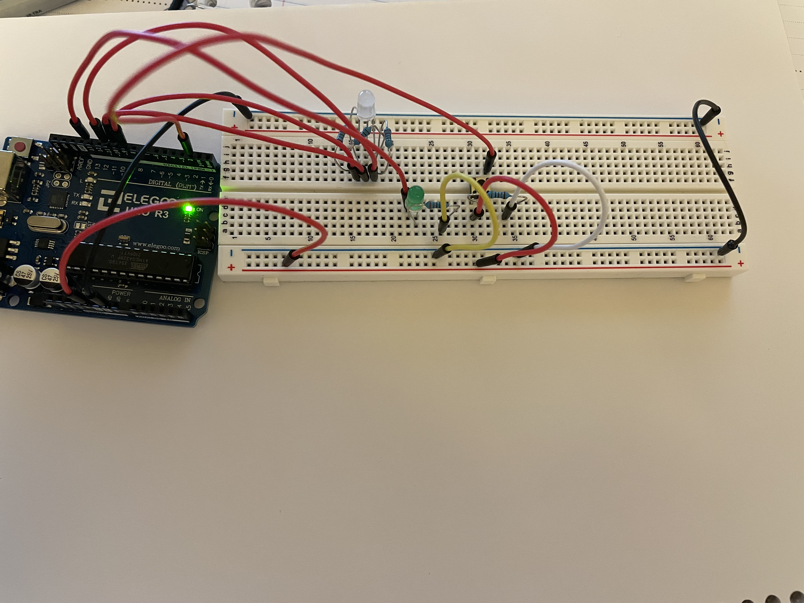
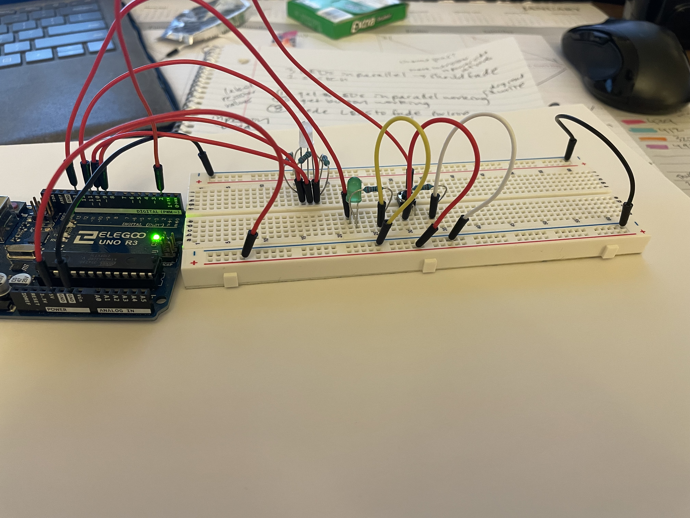
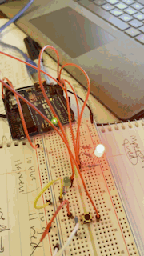

Alissa Acheson's Assignment 2!
For this assignment, my button and fade work, but not when uploaded via the same code file, after discussing in office hours, we think it was not due to the circuits/or code but potentially the arduino's capacity itself. When the code that is shown here is uploaded, the fading works but the button does not, but when ONLY the buttons code is uploaded the button does work. Although they dont work at the same time, they are both operating correctly, and their individual operation is what is shown in my gifs. My assignment is also broken down into these two systems.
Button system
The circuits
 
Here are two angles of the circuits of the whole set up, these pictures were taken to highlight the button and green LED is is linked to. The button is in PIN 2, 5V, ground, and has a 10 k ohm resistor. The LED is in PIN 13, and ground, and has a 220 ohm resistor.
The schematics/calculations

The calculations for resistors and the schematics are shown above. There are two circuits here and they interact through the code.
The functioning button

The green LED lights up when the push button is pressed.
Fade system
The circuits


Here are two angles of the circuits of the whole set up, these pictures were taken to highlight the rgb LED that completes the fade, red is connected to PIN 9~, green is PIN 10~ and blue is PIN 11~, the ~ pins allow for the fading. As well as each is connected to a 220 ohm resistor, and the whole LED goes to ground.
The schematics/calculations

The calculations for resistors and the schematics are shown above. There is one circuit using the rgb LED.
The functioning fade

The LED fades from red, green to blue.
The combined code
Again if the two functions are seperated out, each system works but when uploaded as seen below, only the fade works, but theoretically they both should work as the circuits and code is correct, the theory is that the arduino cant handle both interactions.
const int buttonPin = 2; // the number of the button pin
const int ledPin = 13; // the number of the LED pin
int buttonState = 0; // variable for reading the button status
void setup() {
// initialize the LED pin as an output:
pinMode(ledPin, OUTPUT);
// initialize the pushbutton pin as an input:
pinMode(buttonPin, INPUT);
}
void loop() {
//the button code
// read the state of the button value:
buttonState = digitalRead(buttonPin);
// check if the button is pressed. If it is, the buttonState is HIGH:
if (buttonState == HIGH) {
// turn green LED on:
digitalWrite(ledPin, HIGH);
} else {
// turn green LED off:
digitalWrite(ledPin, LOW);
}
//the fade code for the rgb LED
for (int pinNum = 9; pinNum <= 11; pinNum ++) { //cycle through the pins, that correspond to diff colors
// fade in from min to max in increments of 5 points:
for (int fadeValue = 0 ; fadeValue <= 255; fadeValue += 5) {
// sets the value (range from 0 to 255):
analogWrite(pinNum, fadeValue);
// wait for 30 milliseconds to see the dim
delay(30);
}
// fade out from max to min in increments of 5 points:
for (int fadeValue = 255 ; fadeValue >= 0; fadeValue -= 5) {
// sets the value (range from 0 to 255):
analogWrite(pinNum, fadeValue);
// wait for 30 milliseconds to see the dim
delay(30);
}
}
}